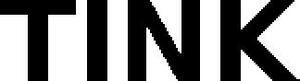

Trade Mark Journal No.2025/026 27 June 2025
WO0000001847161 (7,9,11,21,28)
Office of origin: European Union Intellectual Property Office (EUIPO)
Date of International Registration:12 February 2025
Date of designation in the UK:
12 February 2025

International priority date claimed: 12 August 2024
(European Union Intellectual Property Office (EUIPO))
(019066757)
- Class 7
- Vacuum cleaners; sweeping, cleaning, washing and laundering machines; ironing machines and laundry presses; automatic floor scrubbers; carpet brushing machines; carpet cleaning machines [electric]; dishwashers; dishwashers for household purposes; cordless vacuum cleaners; electric brooms; dust removing installations for cleaning purposes; floor cleaning machines; electrical domestic machines for vacuuming; electric washing machines; electric vacuum cleaners; housekeeping robots for household purpose; machines and apparatus for cleaning, electric; robotic cleaners for household purposes; robotic cleaning [polishing] machines for floors; robotic cleaning [vacuuming] machines for floors; robotic cleaning machines; robotic vacuum cleaners; robots for cleaning.
- Class 9
- Sensor switches; sensors; light sensors; fire sensors; optical sensors; shutter sensors; heat sensors; photoelectric sensors; alarm sensors; gas sensors; smoke sensors; temperature sensors; pollutant sensors; infrared sensors; electronic sensors; distance sensors; digital sensors; motion sensors; humidity sensors; alarm sensors for refrigerators; air quality sensors; testing and quality control devices; controllers and regulators; measuring devices; sensors, detectors and monitoring instruments; door opening and closing detecting sensors; window opening and closing detecting sensors; measuring, detecting, monitoring and controlling devices; electronic security systems for home network; security alarms; security cameras; security surveillance apparatus; thermostats; thermostat controllers; thermostat wires; room thermostats; electric thermostats; thermostat control apparatus; thermal sensors [thermostats]; thermostats for vehicles; adapter plugs; electric plug adapters; apparatus, instruments and cables for electricity; electrical components; electrical and electronic components; moveable sockets; electrical sockets; connector sockets (electric -); wireless signal boosters; data storage devices and media; home automation hubs; home automation devices; home automation systems; smart locks; smart door locks; smart home hubs; audio/visual and photographic devices; communications equipment; signal cables for it, av and telecommunication; data processing equipment and accessories (electrical and mechanical); multimedia apparatus and instruments; multifunction keyboards; time programmers; signal expanders; headphones; stereo headphones; wireless headphones; music headphones; in-ear headphones; noise cancelling headphones; headphones for smart phones; cases for headphones; adapter cables for headphones; two-way plugs for headphones.
- Class 11
- Lightbulbs; security lighting; temperature sensors [thermostatic valves] for central heating radiators; temperature regulators [thermostatic valves] for central heating radiators; table lamps; table lamp (lampshades for -); accent lights for indoor use; arc lamps; book lights; bedside lamps; lighting and lighting reflectors; decorative lights; desk lamps; computer controlled lighting apparatus; compact fluorescent light bulbs; color filters for lighting apparatus; ceiling fans with integrated lights; ceiling lights; display lighting; flexible lamps; halogen lamps; halogen light bulbs; garden lighting; fluorescent lighting apparatus; floor lamps; hanging ceiling lamps; headlamp bulbs; lamps; lamp shades; lamps for outdoor use; led candles; led lamps; led light machines; led mood lights; led safety lamps; light bulbs; light bulbs, electric; outdoor lighting; plant grow lights; reflectors for light control; solar powered lamps; smart light bulbs; automatic watering installations; sprayers [automatic installations] for watering; watering apparatus [automatic] for garden use; automatic watering installations for use in gardening; sprinklers [automatic installations] for watering flowers and plants; electrical heating pads for pets, not for veterinary purposes.
- Class 21
- Electric pet brushes; animal activated animal feeders; animal-activated pet feeders; automatic litter boxes for pets; bird baths; bird feeders; brushes for pets; drinking troughs; electronic pet feeders; pet feeding bowls, automatic; ultrasonic bird repellers devices; wild animal repellent devices, not of metal; wire cages for household pets.
- Class 28
- Pet toys; toys and playthings for pets; toys, games and playthings for pet animals; smart toys; smart plush toys; smart robot toys; talking toys; electronic toys; musical toys; dog toys; intelligent toys; electronic learning toys.
tink GmbH
Representative: SCHULZ JUNGHANS PATENTANWÄLTE PARTGMBB, Großbeerenstraße 71 1. Hof, Remise, rechts, 10963 Berlin, GERMANY